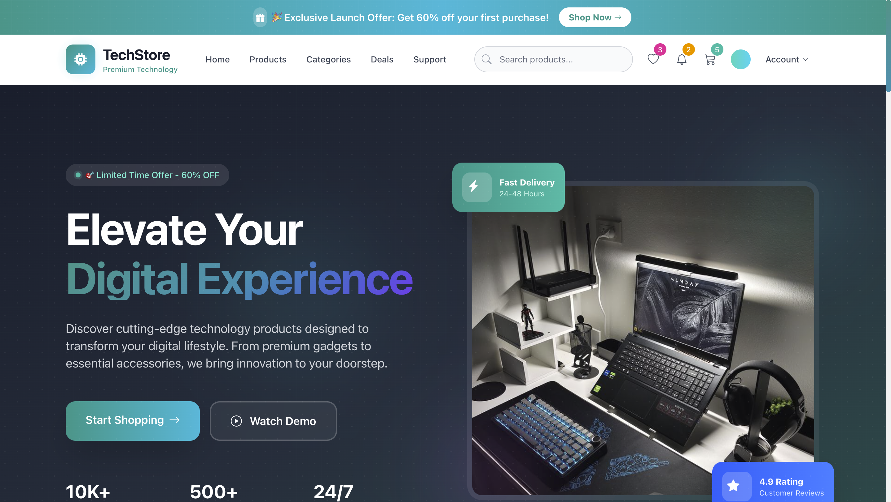

Tech Store E-Commerce is a frontend-focused web project designed to simulate a modern online technology store. The project was built to improve my skills in responsive web design, layout structuring, and creating clean user interfaces.
I wanted to create an e-commerce experience that feels modern, fast, and easy to navigate across desktop and mobile devices. The main focus was on frontend development, visual presentation, and user experience.
Watch demo — see the features in action
This project started as a simple idea: "Can I build an e-commerce website that actually looks professional?"
Along the way, I spent a lot of time refining layouts, adjusting spacing, improving responsiveness, and experimenting with different design styles. Many sections were redesigned multiple times before I found something that felt right.
By the end of the project, I gained a much better understanding of modern frontend development, responsive design principles, and how thoughtful UI decisions can make a website feel more polished and user-friendly.